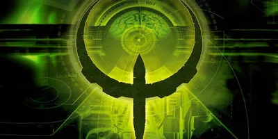

Welcome to Quake 4 Fan Hub
Introduction
Quake 4 is a fast-paced first-person shooter that continues the legendary Quake series. Originally released in 2005, the game follows the story of Matthew Kane, a marine fighting against the alien Strogg. This website is dedicated to helping players understand the game, improve their skills, and test their knowledge with an interactive quiz.
Key Features of Quake 4:
- Intense single-player campaign
- Multiplayer battles with classic Quake-style action
- A variety of weapons, including the iconic Railgun
Game Overview
- Release Date: October 18, 2005
- Developer: Raven Software, id Software
- Platforms: PC, Xbox 360

Looking for tips and strategies?
Head over to our Guide Page for in-depth gameplay advice!
Think you know Quake 4 well?
Try our Quiz Page and test your knowledge!